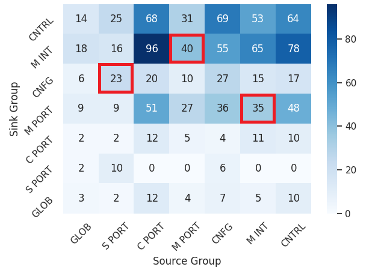
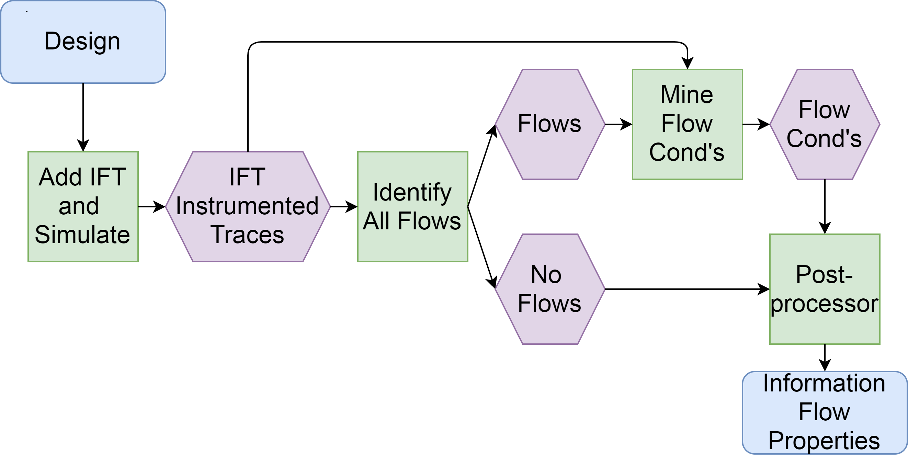

Security Data Mining
Calvin (Deutschbein)
Willamette University

About Me
- Name
- Calvin (Deutschbein)
- Pronouns
- they/them
- Email:
- ckdeutschbein@willamette.edu
- Website:
- cd-public.github.io
- Quals
- Ph.D. Computer Science, UNC Chapel Hill, 2021
- M.S. Computer Science, UNC Chapel Hill, 2017
- B.A. Mathematics, UChicago, 2015
- B.S. Computer Science, UChicago, 2015
Background
- Thesis Title
- Mining Secure Behavior of Hardware Designs
- Plain English
- Just as there are bugs in code that makes software, modern hardware is also written in code and therefore may contain bugs. I find these bugs.
- Thesis
- Specification mining can discover properties that can be used to verify
- the secure behavior of closed source CISC CPU designs,
- properties that can be used to verify the temporal correctness of CPU designs, and
- hyperproperties that can be used to verify that modules, SoCs, and CPUs have secure information flow.
- Some partners
- Intel Corporation, Semiconductor Research Corporation, Synopsys, MITRE, Cycuity
Moore's Law
Processor size doubles every few years - and has for decades.
A Spectre Haunting
In 2018, the Spectre/Meltdown vulnerability was discovered in virtually all computer processors.

Oh no!
Computing & Data
The solution is simple: Compute the values of billions of transitors...

...record every bit of data they hold...

Record what billions of transitors do...
Computing & Data
The solution is simple: Compute the values of billions of transitors...
...record every bit of data they hold...
Record what billions of transitors do...
Computing & Data
...then simply* find all relationships between all transitors.

*It turns out this isn't simple. But each part is!
Openings
I need researchers to (1) run experiments to create recordings.
2022-05-25
Starting from Ubuntu 20.04
Following https://github.com/pulp-platform/pulp-runtime/blob/master/README.md
$ sudo apt install git python3-pip gawk texinfo libgmp-dev libmpfr-dev libmpc-dev
$ sudo pip3 install pyelftools
Cloning repositories into jldey@ubuntu:~/Repos/pulp
$ git clone --recursive https://github.com/pulp-platform/pulp-riscv-gnu-toolchain
so now we should have the toolchain installed, if all's well. Now, toolchain
dependencies:
$ sudo apt-get install autoconf automake autotools-dev curl libmpc-dev libmpfr-dev
libgmp-dev gawk build-essential bison flex texinfo gperf libtool patchutils bc
zlib1g-dev
Openings
I need researchers to (2) write Python that can read these recordings.
def make_decls(key):
to_write = open("universal.decls","w")
prefix = "input-language C/C++\ndecl-version 2.0\nvar-comparability implicit\n\n" # this is just how daikon works
suf_int = "\n var-kind variable\n rep-type int\n dec-type int\n comparability 1 \n"
suf_str = "\n var-kind variable\n rep-type string\n dec-type char*\n comparability 4 \n"
to_write.write(prefix)
# make key by cutting up the header
last = "" # using staggered traversal
strings = []
for point in ["ppt ..tick():::ENTER\n ppt-type enter\n","\nppt ..tick():::EXIT0\n ppt-type subexit\n"]:
to_write.write(point)
for reg in key:
# only write a single var for each register, regardless of bit length, to decls
if reg[2] != last:
# prevent daikon for looking for relationships between IFT and original design state
# so this doesn't work because we actually need to remove the shadows from the header
if "shadow" not in reg[2]:
suf = suf_int # ususally we encode as int
if "[" in reg[3] and "]" in reg[3] and ":" not in reg[3]:
if int(reg[3].replace("[","").replace("]","")) > 31: # but not if we overflow
suf = suf_str
strings.append(reg[2])
to_write.write(" variable " + reg[2] + suf)
last = reg[2]
to_write.close()
for reg in key:
# continue to store bits separately internally for vcd reading
if len(reg) > 4:
reg[2] = reg[2] + " " + reg[3]
while len(reg) > 3:
reg.remove(reg[3])
for i in range(len(key)):
# populate starting value as uninitialized
key[i] = key[i] + ["x"]
# key a list of 4 tuples
# one tuple per register or derived value
# the tuple is size, vcd_name, plaintext name, starting value
# strings is the list of registers that have to be encoded as strings due to overflow
return [key, strings]Openings
I need researchers to (3) create data visualizations summarizing the findings.
import pandas as pd
import numpy as np
import seaborn as sns
import matplotlib.pyplot as plt
sns.set()
distro = [[3,2,12,4,7,5,10],
[2,10,0,0,6,0,0],
[2,2,12,5,4,11,10],
[9,9,51,27,36,35,48],
[6,23,20,10,27,15,17],
[18,16,96,40,55,65,78],
[14,25,68,31,69,53,64]]
distro.reverse()
ax = sns.heatmap(distro, cmap='Blues', annot=True)
labels = ['GLOB', 'S PORT', 'C PORT', 'M PORT', 'CNFG', 'M INT', 'CNTRL']
ax.set_xticklabels(labels)
labels.reverse()
ax.set_yticklabels(labels)
plt.xlabel("Source Group")
plt.ylabel("Sink Group")
plt.yticks(rotation=45)
plt.xticks(rotation=45)
plt.tight_layout()
plt.savefig('heat.png')This created the heatmap on the title slide.
Security Data Mining
Thank you!